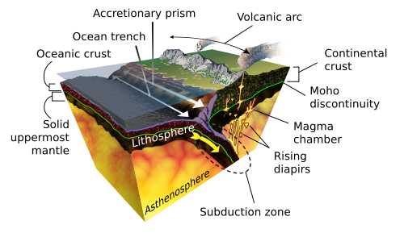

A stratovolcano, also known as a composite volcano, is a typically conical volcano built up by many alternating layers (strata) of hardened lava and tephra.[1] Unlike shield volcanoes, stratovolcanoes are characterized by a steep profile with a summit crater and explosive eruptions.[2] Some have collapsed summit craters called calderas.[3] The lava flowing from stratovolcanoes typically cools and solidifies before spreading far, due to high viscosity. The magma forming this lava is often felsic, having high to intermediate levels of silica (as in rhyolite, dacite, or andesite), with lesser amounts of less viscous mafic magma.[4] Extensive felsic lava flows are uncommon, but can travel as far as 8 kilometres (5 miles).[5]
The term composite volcano is used because strata are usually mixed and uneven instead of neat layers.[6] They are among the most common types of volcanoes;[7] more than 700 stratovolcanoes have erupted lava during the Holocene Epoch (the last 11,700 years),[8] and many older, now extinct, stratovolcanoes erupted lava as far back as Archean times.[9][10] Stratovolcanoes are typically found in subduction zones but they also occur in other geological settings. Two examples of stratovolcanoes famous for catastrophic eruptions are Krakatoa in Indonesia (which erupted in 1883 claiming 36,000 lives)[11] and Mount Vesuvius in Italy (which erupted in 79 A.D killing an estimated 2,000 people).[12] In modern times, Mount St. Helens (1980) in Washington State, US, and Mount Pinatubo (1991) in the Philippines have erupted catastrophically, but with fewer deaths.[7]

The existence of stratovolcanoes on other bodies of the Solar System has not been conclusively demonstrated.[13] Zephyria Tholus is one of two mountains in the Aeolis region of Mars that have been proposed as possible stratovolcanoes.[14]
"Volcanic" redirects here. For other uses, see Volcano (disambiguation) and Volcanic (disambiguation). Augustine Volcano (Alaska) during its eruptive phase on January 24, 2006 A volcano is a vent or fissure in the crust of a planetary-mass object that allows hot lava, volcanic ash, and gases to escape from a magma chamber below the surface.[1] On Earth, volcanoes are most often found where tectonic plates are diverging or converging, and because most of Earth's plate boundaries are underwater, most volcanoes are found underwater. For example, a mid-ocean ridge, such as the Mid-Atlantic Ridge, has volcanoes caused by divergent tectonic plates whereas the Pacific Ring of Fire has volcanoes caused by convergent tectonic plates. Volcanoes resulting from divergent tectonic activity are usually non-explosive whereas those resulting from convergent tectonic activity cause violent eruptions.[2][3] Volcanoes can also form where there is stretching and thinning of the crust's plates, such as in the East African Rift, the Wells Gray-Clearwater volcanic field, and the Rio Grande rift in North America. Volcanism away from plate boundaries most likely arises from upwelling diapirs from the core–mantle boundary called mantle plumes, 3,000 kilometres (1,900 mi) deep within Earth. This results in hotspot volcanism or intraplate volcanism, in which the plume may cause thinning of the crust and result in a volcanic island chain due to the continuous movement of the tectonic plate, of which the Hawaiian hotspot is an example.[4] Volcanoes are usually not created at transform tectonic boundaries where two tectonic plates slide past one another. Volcanoes, based on their frequency of eruption or volcanism, are referred to as either active, dormant, or extinct.[5] Active volcanoes have a history of volcanism and are likely to erupt again, while extinct ones are not capable of eruption at all as they have no magma source. "Dormant" volcanoes have not erupted in a long time – generally accepted as since the start of the Holocene, about 12,000 years ago – but may erupt again. However, dormant volcanoes are technically considered to be seismically "active".[5] These categories are not entirely uniform; they may overlap for certain examples.[2][6][7] Large eruptions can affect atmospheric temperature as ash and droplets of sulfuric acid obscure the Sun and cool Earth's troposphere. Historically, large volcanic eruptions have been followed by volcanic winters which have caused catastrophic famines.[8]
Other planets besides Earth have volcanoes. For example, volcanoes are very numerous on Venus.[9] Mars has significant volcanoes.[10] In 2009, a paper was published suggesting a new definition for the word 'volcano' that includes processes such as cryovolcanism. It suggested that a volcano be defined as 'an opening on a planet or moon's surface from which magma, as defined for that body, and/or magmatic gas is erupted.'[11] Etymology and terminology The word volcano (UK: /vɒlˈkeɪnəʊ/; US: /vɑːlˈkeɪnoʊ/) originates from the early 17th century, derived from the Italian name Vulcano, a volcanic island in the Aeolian Islands of Italy, which in turn comes from the Latin name Volcānus or Vulcānus, referring to Vulcan, the god of fire in Roman mythology.[12][13] The set of processes and phenomena involved in volcanic activity is called volcanism [early 19th century: from volcano + -ism]. The study of volcanism and volcanoes is called volcanology [mid-19th century: from volcano + -logy], sometimes spelled vulcanology.[12]
Plate tectonics Main article: Plate tectonics According to the theory of plate tectonics, Earth's lithosphere, its rigid outer shell, is broken into sixteen larger and several smaller plates. These move continuously at a slow pace, due to convection in the underlying ductile mantle, and most volcanic activity on Earth takes place along plate boundaries, where plates are converging (and lithosphere is being destroyed) or are diverging (and new lithosphere is being created).[14] During the development of geological theory, certain concepts that allowed the grouping of volcanoes in time, place, structure and composition have developed that ultimately have had to be explained in the theory of plate tectonics. For example, some volcanoes are polygenetic with more than one period of activity during their history; other volcanoes that become extinct after erupting exactly once are monogenetic (meaning "one life") and suc